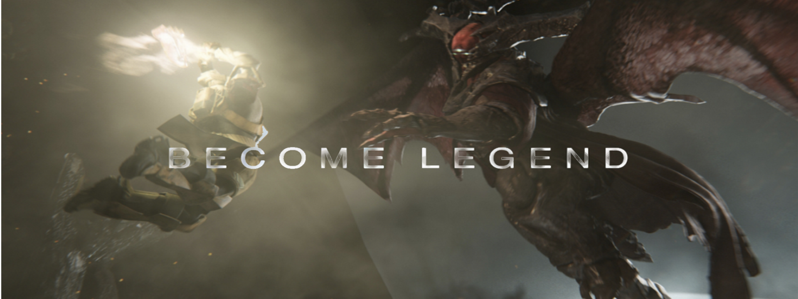

The Latest DLC is: Rise of Iron

Choose your Class

Welcome to my homepage! If your volume is on you should be able to hear the Destiny theme song playing in the background. I thought autoplay would be a good idea for this situation because it brings life to the webpage emersing viewers even deeper into the Destiny universe. The audio file playing in the background is saved in my library as "OST.MP3". I chose an MP3 format for the background music because every browswer supports it and users should have minimal difficulties with it.
If you visit the Academic Policy page you can hear an edited version of this soundtrack where I have taken the Opera vocals and mixed them into different parts of the audio stream. You can tell which part doesn't fit in because since im not a professional at this, the audio isn't very well blended. The file on that page is saved as a WAV.
None of these images/sounds infringe on Bungies copyright because I am not making any profit from the use them. This website is solely for the purpose of Seneca's BTC- Multimedia Presentations course. I do not intend on making any profit from the use of Bungie's products.